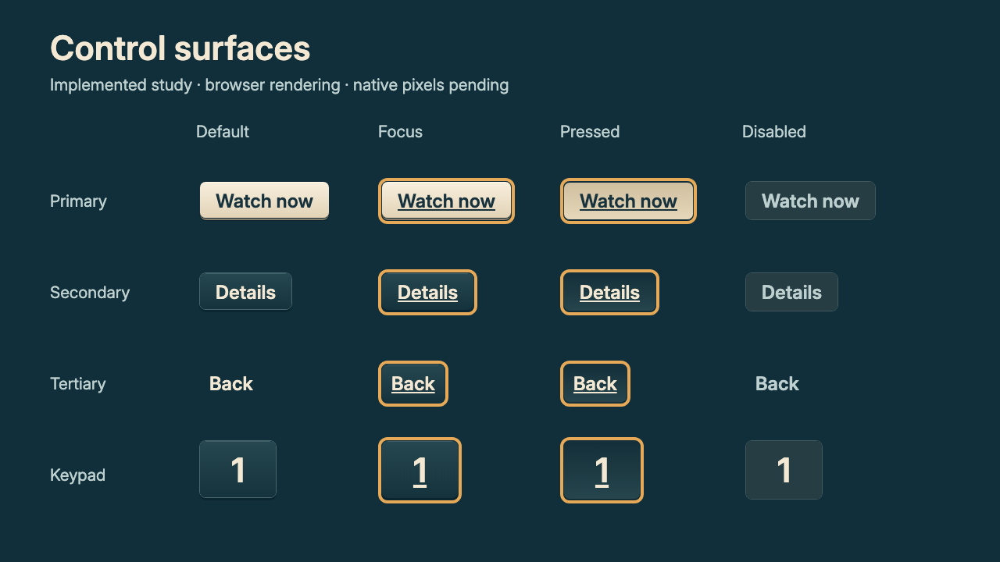
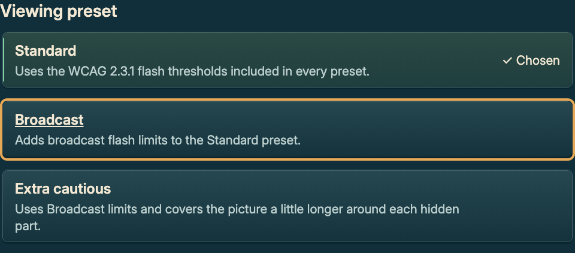

Source 04e5638. Actual opt-in React Native components rendered in Chromium. Native pixels remain unverified; the current app/package is unchanged.
720p study and close-ups · 1080p study and close-ups

